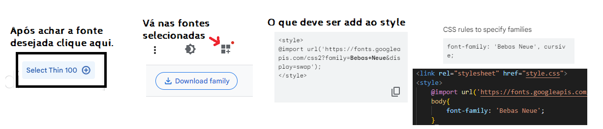

[color] [font-size] [font-family]
#p1{
color: aqua;
font-size: 16px;
font-family: Arial, Helvetica, sans-serif;
}
#p2{
color: rgb(255, 154, 2);
font-size: 2em;
font-family: Georgia, 'Times New Roman', Times, serif;
}
#p3{
color: blueviolet;
font-size: 3em;
font-family: 'Segoe UI', Tahoma, Geneva, Verdana, sans-serif;
}
PALAVRA 1
PALAVRA 2
PALAVRA 3
[font-family] - externo
Google fonts > selecione a fonte > fontes selecionadas > procure style da fonte > copie e cole no style.

Letra com fonte externa. A B C D E F G @ # % $
[font-family] - interno, baixado
Site recomendado para fontes para baixar: https://www.dafont.com/pt/
_______________________________________
<style>
@font-face {
font-family: costa_nova;
src: url(fontes/costa_nova.otf);
}
#interno{
font-family: 'costa_nova';
}
</style>
________________________________________
Letra com fonte interna baixada A B C D E F $ 3 Á
Importante: é bom saber adicionar outros tipos de arquivos da mesma fonte, caso o navegador não seja compatível com aquele tipo de arquivo.
_______________________________________
<style>
@font-face {
font-family: costa_nova;
src: url(fontes/costa_nova.otf), url(fontes/costa_nova2.ttf);
}
#interno{
font-family: 'costa_nova';
}
</style>
________________________________________
Posso adicionar outros detalhes como [weight], [size]
_______________________________________
<style>
@font-face {
font-family: costa_nova;
src: url(fontes/costa_nova.otf), url(fontes/costa_nova2.ttf);
font-size: 20px;
font-weight: bold;
}
#interno{
font-family: 'costa_nova';
}
</style>
________________________________________
Página Inicial